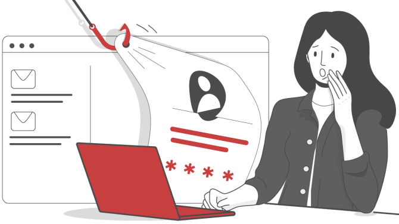

Wie erkenne ich Phishing-E-Mails und -Webseiten?
Phishing-Mails: Worauf achten?
Verbraucher sollten lieber einmal öfter misstrauisch sein als einmal zu wenig. Mit einigen Grundregeln kannst du dich schützen.
- Sei misstrauisch bei E-Mail-Absendern, die du nicht kennst. Doch auch E-Mails von bekannten Absendern können manipuliert sein - wenn die Absender selbst Opfer einer Phishing-Attacke geworden sind.
- Klicke nicht auf Links von unbekannten Absendern oder wenn du unsicher bist.
- Öffne keine Anhänge von unbekannten Absendern oder wenn du unsicher bist.
- Antworte nicht auf verdächtige Mails, Betrüger wissen sonst, dass du die E-Mail-Adresse nutzt und schicken womöglich noch mehr Spam- oder Phishing-Mails.
- Staatliche Institutionen, Banken, Finanzdienstleister, Fluglinien oder Online-Shops fordern ihre Kunden niemals unaufgefordert auf, Zugangsdaten oder Kontoverbindungen einzugeben oder zu ändern. Rufe im Zweifel das Unternehmen an, von dem die E-Mail angeblich kommt.
Anzeichen von Phishing erkennen
Typische Merkmale einer Phishing-Mail sind:
- fehlende persönliche Anrede
- Rechtschreibfehler, seltsamer Satzbau, schlechter Schreibstil
- Drohungen und gesetzte Fristen, die dringenden Handlungsbedarf suggerieren
- Aufforderung, persönliche Daten einzugeben
- Aufforderung, Anhänge oder Links anzuklicken Betrüger gehen immer professioneller vor, um an persönliche Daten zu gelangen. Gefälschte E-Mails sind oft kaum von echten zu unterscheiden. Sie können eine namentliche Anrede enthalten oder bekannte Logos. Deswegen sollte man auch den technischen Aufbau wie folgt prüfen.
Absender und Links überprüfen
Phishing-E-Mails lassen sich meist mit einem genauen Blick auf den Absender oder auf die enthaltenen Links erkennen. Kriminelle arbeiten oft mit Verschleierungstechniken wie Buchstabendrehern oder Subdomänen und nutzen die Namen bekannter Unternehmen. Verbraucher sollten Internet-Links von links nach rechts bis zum dritten Schrägstrich lesen und auf den Bereich mit dem letzten Punkt achten. Hier wird die tatsächliche Ziel-Adresse angezeigt. So führt zum Beispiel https://www.amazon.mybiz.com/ zu mybiz.com und nicht zu amazon.com. Tipp: Mit der Maus über verlinkte Texte oder Buttons fahren, die Ziel-Adresse wird dann unter der Maus oder am unteren Bildschirmrand angezeigt.
Phishing-Mail geöffnet - was tun?
Wird eine Phishing-Mail als solche erkannt, sollte sie gelöscht werden. Wer allerdings Opfer einer Phishing-Attacke geworden ist, sollte die Mail behalten, denn sie ist ein wichtiges Beweismittel für die Polizei. Verbraucher sollten in jedem Fall schnell handeln und ihre Bank informieren. Um sich vor Abbuchungen zu schützen, sollten der Online-Zugang, das Konto sowie Kredit- und EC-Karten gesperrt werden - das geht rund um die Uhr unter der bundesweiten Telefonnummer 116 116.
Phishing-Mail melden
Die Verbraucherzentrale rät, Phishing-Mails vor dem Löschen an die Mailadresse phishing@verbraucherzentrale.nrw weiterzuleiten. Sie wertet eingehende E-Mails aus und informiert auf ihrer Seite "Phishing-Radar" über aktuelle Fälle von Betrug . Außerdem sollte die Mail - wenn möglich - auch an den echten Anbieter geschickt werden. Dadurch erfährt dieser vom Phishing-Versuch und kann Schritte gegen den Betrugsversuch unternehmen.
Phishing per Telefon: Kriminelle geben sich als Mitarbeiter aus
Phishing per Telefon geht oft von professionell ausgestatteten, illegalen Callcentern aus, die ihren Sitz im Ausland haben. An den Telefonen arbeiten geschulte Mitarbeiter, die auf jeden Einwand der Angerufenen plausible Antworten haben. So geben sie sich als Mitarbeiter großer Unternehmen wie Microsoft, Apple, Sparkassen, Netflix, Gewinnspielanbietern oder Paypal aus, um an Daten oder Passwörter zu kommen. Auch staatliche Behörden wie Staatsanwaltschaften oder Finanzämter werden vorgetäuscht. Dabei setzen die Betrüger die Angerufenen unter Druck, verleiten dich zu schnellen Entscheidungen. Entweder, um angeblich größeres Übel abzuwenden. Oder um vermeintlich große finanzielle Gewinne zu erhalten.
Für weitere Informationen und Tipps zur Phishing-Prävention, besuche die Webseite der Bundesamt für Sicherheit und Informationstechnik regelmäßig.